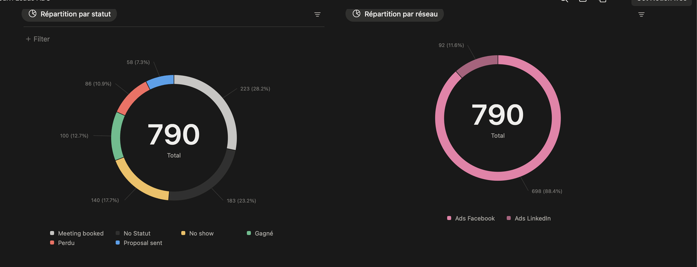
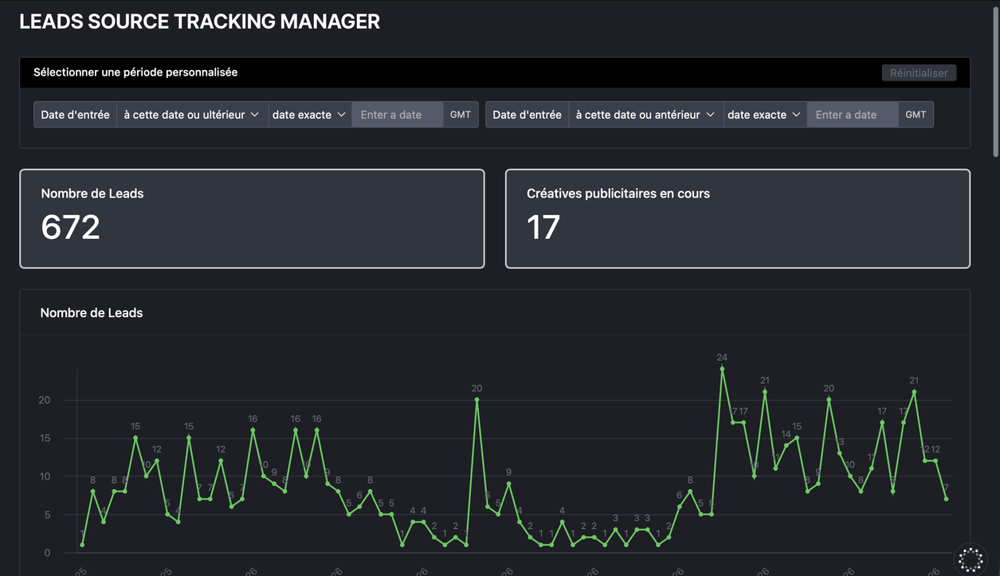
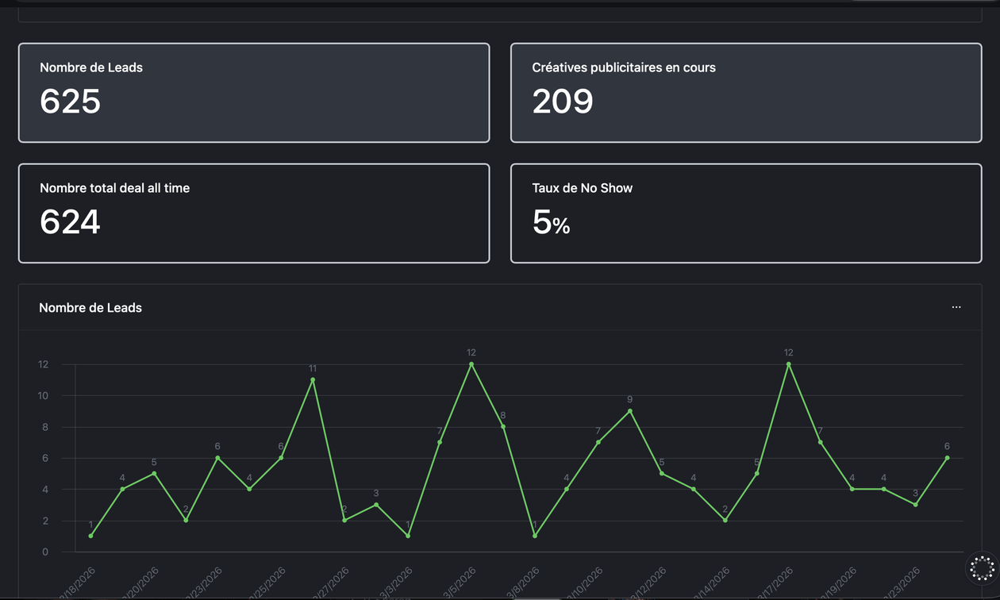

Des leads qualifiés pour vos offres
Des rendez-vous avec des gens qui peuvent acheter, pas des listes de contacts. On installe le système complet qui les produit.
- Publicités Meta, LinkedIn et TikTok
- Tunnel de rendez-vous
- Qualification par agents IA
Pour les PME et ETI : nous connectons vos publicités, votre tunnel de rendez-vous et vos agents IA pour qualifier chaque demande et la transmettre à votre équipe commerciale.
Le buzz, très peu pour nous. Les ventes, c’est ce qui nous fait vibrer.
Des rendez-vous avec des gens qui peuvent acheter, pas des listes de contacts. On installe le système complet qui les produit.
Elle trie vos demandes entrantes, répond aux questions courantes et produit vos contenus. Elle sert votre performance commerciale ; elle ne la remplace pas.
Personne ne vous connaîtra grâce à nous, mais vous ferez du cash avec nos systèmes.
Démultiplier vos ventes middle & haute gamme en moins de 3 mois.
L’IA ne remplacera personne chez vous, mais elle fera gagner du temps à vos équipes.
Mettre l’IA générative au service de votre performance, de la formation de vos équipes au suivi de vos outils.
3 moisl'horizon sur lequel on travaille pour démultiplier vos ventes
5étapes, de la création du système à l'extension aux autres canaux
24 h/24vos demandes entrantes qualifiées, week-ends compris
3régies publicitaires pilotées — Meta, LinkedIn, TikTok
Les preuves clients parlent d’elles-mêmes.



Chaque système arrive avec son tableau de bord. Voici les quatre briques qu'on met en place, et l'indicateur que vous y verrez dès la première semaine.
Détection et relance des opportunités en continu sur Meta, LinkedIn et TikTok, sans saisie manuelle.
Opportunités détectées par semaineLes demandes entrantes sont lues, triées et qualifiées selon vos règles avant d'arriver sur le bureau de ceux qui vendent — les closers. Ils ne parlent qu'à des gens qui peuvent acheter.
Part de rendez-vous réellement qualifiésRéponses aux emails et aux questions récurrentes 24 h/24, selon vos règles métier et votre ton.
Sollicitations traitées sans interventionGénération et distribution des contenus sur l'ensemble de vos canaux à partir d'une source unique.
Volume publié et temps de rédactionCe ne sont pas des maquettes : ce sont les scénarios réellement construits, tels qu'ils tournent. Voici les quatre principaux.
Il passe en revue toutes vos campagnes Meta et LinkedIn, récupère les performances de chaque annonce et les consolide dans un tableau de bord unique. Vous arrivez le matin avec les chiffres déjà triés, prêts pour les arbitrages de la journée.
À chaque conversion, l'agent renvoie l'information directement aux serveurs de Meta et de LinkedIn. Les algorithmes publicitaires apprennent sur des données complètes plutôt que sur ce que les navigateurs veulent bien laisser passer, et le ciblage se resserre.
Un lead arrive, l'agent le qualifie, le classe (qualifié, semi-qualifié, non qualifié), l'enregistre dans le CRM et prévient dans la seconde la personne chargée de décrocher le rendez-vous — le setter, dans le jargon — ainsi que l'équipe. Plus de lead chaud qui refroidit dans une boîte mail.
Il reprend les comptes rendus de réunion, en tire un résumé structuré et le distribue à chaque équipe concernée, puis met les statuts à jour. Le bilan est écrit et diffusé sans que personne n'ait à s'y coller.
Chaque étape s'appuie sur la précédente : on ne lance pas de publicité avant que le système de rendez-vous soit en place, et on ne scale pas avant que les campagnes soient optimisées.
On écoute ce que remontent le terrain — qui décroche, qui bloque, sur quel argument — et on ajuste les campagnes en conséquence.
Développement des équipes de qualification et de vente.
Extension à Google, YouTube, TikTok et LinkedIn — et, lorsqu'elles seront accessibles, aux publicités sur ChatGPT ou Perplexity.
La plupart des dirigeants qu'on rencontre sont piégés dans l'opérationnel, avec un pipeline commercial instable. Voici ce que le système déplace, ligne par ligne.
Aucune campagne ne part avant que le système de rendez-vous existe, et rien n'est scalé avant que les campagnes soient optimisées. C'est ce qui vous évite de payer des clics qui tombent dans le vide.
Les quatre scénarios plus haut sont des captures de production, pas des maquettes. Vous voyez ce que vous achetez avant de signer.
Le système s'installe sur votre boîte mail, vos Google Sheets, votre CRM. Vous n'avez rien de nouveau à apprendre, et rien à remplacer.
SmartEfico vous accompagne à chaque étape de votre transformation : de la définition de votre stratégie au déploiement d’outils performants, jusqu’à l’amélioration continue de vos usages.
Développez les compétences IA de vos équipes grâce à des formations personnalisées, basées sur vos métiers et vos cas d’usage réels.
Identifiez les meilleures opportunités pour votre activité. Nous analysons vos processus, détectons les tâches à automatiser et construisons une feuille de route adaptée à vos priorités.
Aidez vos collaborateurs à comprendre les possibilités, les limites et les risques de l’intelligence artificielle. Nous vous accompagnons également dans la définition de règles d’utilisation claires et sécurisées.
Passez de l’idée à l’action avec des assistants IA et des workflows d’automatisation connectés à vos outils existants.
Nous suivons les performances de vos solutions, optimisons les automatisations et identifions régulièrement de nouvelles opportunités d’amélioration.
Des méthodes concrètes pour mettre l'IA au travail dans votre activité. Les prochaines masterclass s'afficheront ici.
Non, jamais. Tout est monté en no-code avec Make ou n8n, branché sur les outils que vous utilisez déjà : votre boîte mail, vos Google Sheets, votre CRM. Vous n'installez rien de nouveau à apprendre.
Meta, LinkedIn et TikTok au démarrage, selon l'endroit où se trouve votre clientèle. L'extension à Google et YouTube arrive à l'étape de multi-scaling, une fois les premières campagnes optimisées.
Un système qui traite une tâche de bout en bout selon vos règles métier : répondre aux emails entrants, gérer les demandes clients courantes, ou qualifier les leads avant qu'ils n'arrivent sur le bureau de vos closers. Vous définissez les règles, il exécute.
PME, ETI et grands comptes, entrepreneurs et dirigeants B2B ou B2C, agences marketing et immobilières, cabinets d'avocats, gestionnaires de patrimoine, agences d'assurances, consultants et coachs premium.
Non. L'étape de scaling sert justement à développer vos équipes de qualification et de vente. Si vous avez déjà des setters et des closers, leurs retours alimentent directement l'optimisation des campagnes.
Les missions se conduisent principalement à distance. Le suivi se fait par visio et par écrit, avec les systèmes livrés directement dans vos outils.
Oui. Formation, conseil et sensibilisation font partie de l'accompagnement : l'objectif est que vos systèmes continuent de tourner sans nous.
Vous réservez un appel via le formulaire ci-dessous. On regarde ensemble votre offre, votre cible et ce qui bloque aujourd'hui. La proposition chiffrée vient après ce cadrage, jamais avant : le prix dépend du nombre d'outils à connecter et du volume à traiter.
Réservez votre rendez-vous pour implémenter notre système d’acquisition avec des Ads et l’IA, et mettre l’IA générative au service de votre performance.
Réserver mon appelFormulaire Tally · nouvel onglet
C'est moi qui prends l'appel, qui lis vos réponses et qui installe les systèmes décrits sur cette page.
 L'assistant SmartEfico
L'assistant SmartEfico
Réponses générées par une IA (Claude, d'Anthropic) : elles peuvent comporter des erreurs. N'y écrivez pas d'informations sensibles.